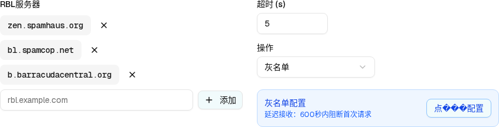

阻断✓
隔离✓
标记✓
灰名单✓
rblAction === "greylist"）| 所属组件 | 2.2 RBL 配置面板 renderRblConfig() |
| 主文件 | filter-rules-pipeline-rbl-filter/index.html |
| demo 源 | connection-layer-page.tsx L1075–1109（{rblAction === "greylist" && (…)}） |
| 触发路径 | 层级 1 → 右栏「操作」下拉 → 选中「灰名单」→ setRblAction("greylist") + setHasUnsavedChanges(true) → 条件渲染入口卡片 |
| DOM 节点数 | 面板 44（层级 1 的 38 + 6）｜ 入口卡根 5 |

action = greylist 时的全貌：右栏底部多出蓝色灰名单入口卡↓ 可操作预览：切换「操作」下拉可让入口卡出现/消失（层级 1 ↔ 层级 2）；下方按钮切换摘要模式，可看到 greylistModeSummaryDelay / greylistModeSummaryRate 两种文案；点入口卡按钮进入层级 3。
灰名单配置
延迟接收：600秒内阻断首次请求
greylistMode 的两种已生效值）：
action = "block"，入口卡按条件渲染规则消失 → 这就是 层级 1。| # | 元素 | 类型 | 文案（实际渲染） | 样式（实测） | 交互 | i18n key |
|---|---|---|---|---|---|---|
| 1 | 卡片根 | div | — | 410.5 × 64 px；padding 12px；radius 10px；bg lab(96.492 -1.146 -5.115)（blue-50）；border 1px lab(86.15 -4.04 -21.08)（blue-200） | 无 | — |
| 2 | 文本容器 | div .flex-1 | — | 宽 262.5px | 无 | — |
| 3 | 标题 | p | 「灰名单配置」 | 14px / 500；色 lab(36.91 35.10 -85.69)（blue-700） | 无 | connection.greylistConfig |
| 4 | 摘要 | p | delay：「延迟接收：600秒内阻断首次请求」 rateLimit：「频率限制：600秒内最多5次」 | 12px；色 lab(44.06 29.03 -86.04)（blue-600）；mt-0.5 | 随 greylistMode 切换文案。{max} 恒为 5（无 UI 可改，见主文件 D2） | connection.greylistModeSummaryDelay / …Rate |
| 5 | 配置按钮 | button outline | 「点���配置」乱码 | 110 × 32 px；radius 8px；border lab(77.51 -6.46 -36.42)（blue-300）；文字 blue-700；shrink-0 | click → 拷贝 8 个状态到 greylistDraft → setShowGreylistDialog(true) | connection.greylistConfigure（zh 值损坏，见主文件 D5） |
[data-spec='greylist-entry']）| 比对项 | demo 实际 DOM | 预览 HTML | 一致 |
|---|---|---|---|
| 入口卡根节点 | div.flex.items-center.gap-3.p-3.rounded-lg.border.border-blue-200.bg-blue-50… | div.dp-gl-card（同 padding / radius / 蓝 50 底 / 蓝 200 边） | ✅ |
| 入口卡节点总数 | 5（div > div.flex-1 > p + p，兄弟 button） | 5 | ✅ |
| 外层包裹 | div.pt-1（条件渲染的外壳，第 6 个节点） | div.dp-gl-wrap（padding-top:4px） | ✅ |
| 面板节点数增量 | 38（block）→ 44（greylist），+6 | +6（.dp-gl-wrap 1 + 卡片 5） | ✅ |
| 标题文案 | "灰名单配置" | "灰名单配置" | ✅ |
| 摘要文案（delay） | "延迟接收：600秒内阻断首次请求" | 逐字一致 | ✅ |
| 摘要文案（rateLimit，确认后实测） | "频率限制：600秒内最多5次" | 逐字一致（切 rateLimit 按钮可见） | ✅ |
| 按钮文案 | "点���配置"（3 个 U+FFFD） | 如实保留 3 个 �，未擅自「修好」 | ✅ |
| 按钮是否含图标 | 无 svg（纯文字 button） | 无 svg | ✅ |
| action=block 时 | 整个 div.pt-1 子树不渲染 | 移除 .on 后不显示 | ✅ |
验证方法：先点击「操作」下拉选中「灰名单」，再对 [data-spec='rbl-panel'] 与 [data-spec='greylist-entry'] 各做一次 outerHTML + DOM 树提取；随后在 Dialog 中切到 rateLimit 并点「确认」，重新读取入口卡 innerText，得到 "灰名单配置 | 频率限制：600秒内最多5次 | 点���配置"——证实摘要随已生效模式更新，且 {max} 渲染为 5。